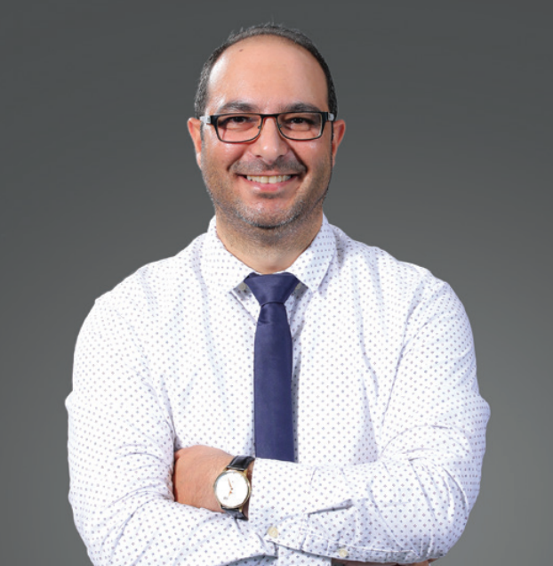

Associate Professor of Biomedical Engineering by Appointment
Department of Biomedical Engineering
School of Applied Medical Sciences
German Jordanian University (GJU)

Associate Professor of Biomedical Engineering by appointment with doctoral training in Pathology and an internationally visible research record, including publications in The Lancet family, Scientific Reports, Nucleic Acids Research, and Nature Medicine.
Leads an independent research program in translational and applied biomedical engineering informed by molecular pathology, with emphasis on infectious diseases, diagnostics, and clinically relevant biomedical systems, supported by competitive principal investigator-led funding.
Contributes to large-scale international collaborations, including the Global Health Metrics & Evaluation and Global Burden of Diseases studies, which complement and contextualize the core independent research agenda.
Has held sustained senior academic leadership roles, including dean-level appointments and chairmanship of a JFDA-approved Institutional Review Board. Recent work includes the identification and registration of globally novel Streptococcus pneumoniae sequence types in international reference databases (e.g., pubMLST), reflecting continued engagement in pathogen characterization and translational microbiology.
funded by John E. Fogarty International Center for Advanced Study in the Health Sciences at the U.S. National Institutes of Health (NIH).
Title of Ph.D. Thesis: “Mechanism of DNA Binding of an Unusual Bacterial Transcription Regulator”.
Title of M.Sc. Thesis: “Generation and Characterization of Glu 29 Arg Mutant Drosophila Dihydrofolate Reductase and Analysis of Methotrexate Resistance”.
Focus: molecular biology techniques, genetic analysis, and bioprocess fundamentals.
| Year | Award / Recognition | Organization |
|---|---|---|
| 2025 | IEEE HTB Challenge 2025 – Participant in the Humanitarian Technology Board challenge | IEEE Humanitarian Technology Board |
| 2025 | GIMI Innovation Associate Certification | Global Innovation Management Institute |
| 2025 | IEEE Senior Member – Official elevation to Senior Member status for significant contributions to biomedical engineering | IEEE |
| 2025 | GJU Recognition Ceremony – Invited participant for outstanding service and achievements | GJU President |
| 2024 | The BioScience Excellence Awards in Biotechnology, 4th edition | BioScience Excellence Awards |
| 2023 | Certificate of Appreciation for SDGs-related Research | Elsevier |
| 2023 & 2024 | DAAD PhD Selection Committee Membership – Appointed to evaluate and select candidates for DAAD doctoral scholarships | DAAD |
| 2022 | GJU President Appreciation Letter – For service and leadership contributions | German Jordanian University (GJU) |
| 2022 | eHDA Volunteer Appreciation Certificate – For volunteer service with the eHealth Development Association | eHealth Development Association (eHDA) |
| 2020 | Patent Application JO|P|2020|171 – JFDA-approved Viral RNA Extraction Kit (JOCOV-19); featured by Nature Middle East & THE (Times Higher Education) | Jordan Food and Drug Administration (JFDA) |
| 2018 | Funded One-Year Research Fellowship | University of California San Diego (UCSD), USA |
| 2015 | Paper of the Month | University of New South Wales (UNSW) |
| 2014 | Postgraduate Research Student Support (PRSS) Scheme Funding – Round 1 | University of New South Wales (UNSW) |
| 2013 | School of Medical Sciences Travel Award | University of New South Wales (UNSW) |
| 2011 | Tuition Fees Scholarship (TFS) for international PhD students | University of New South Wales (UNSW), Australia |
| Year | Program / Certification | Institution / Organization |
|---|---|---|
| 2025 | Completed a 3-day Genomics Data Science Training | Helix Biogen Institute |
| 2025 | Participated in the Managing the Ethics of AI in Organisations webinar | Good Governance Academy |
| 2025 | Completed Biosimilar Technical & Regulatory Training | ZoneTechs |
| 2024–2025 | Completed Digital Learning & Digital Transformation training | CeLAPI, German Jordanian University (GJU) |
| 2024 | Earned certifications in Python and R Programming | DataCamp |
| 2024 & 2025 | Participated in IRB Workshop and DSR Workshop on Research Ethics | GJU / DSR |
| 2024 | Participated in the Improving the Peer Review Experience workshop | Cell Press |
| 2023 | Participated in the Entrepreneurship Bootcamp | DI-TECH (GJU) |
| 2022 | Completed a 4-month Bioinformatics Specialization program | Phi Science |
| 2020 | Participated in the Bioinformatics Research Ethics Workshop | UCSD / Fogarty NIH |
| 2020 | Participated in the CPD/CME COVID-19 Vaccines webinar | WSPID / EACCME |
| 2020 | Completed the Digital Teaching and Blended Learning program | GIZ / Steinbeis Transfer Center |
| 2019 | Completed the Entrepreneurial Teaching Training of Trainers (ToT) Workshop | DAAD Germany |
| 2014 | Achieved Certificate IV in Training and Assessment (TAE40110) | Australia |
| 2013 | Completed Foundations of University Learning and Teaching (FULT) | UNSW Australia |
Serving and served as a Senior Member, SIGHT Chair, EMBS Member, and Jordan Section Coordinator for IEEE are among Dr. Walid Al‑Zyoud's professional engagements.
Dr. Walid Al‑Zyoud also holded active membership in the Australian Society for Biochemistry & Molecular Biology.
Another affiliation is with the E‑Health Development Association in Jordan, where Dr. Walid Al‑Zyoud was and governance member.
A position on the International Advisory Board of the Jordan Journal of Biological Sciences (JJBS) - affiliated with the Higher Education Council and hosted by the Hashemite University, Jordan
Membership in the Jordanian Society of Genetic Engineers rounds out Dr. Walid Al‑Zyoud's national society affiliations.
Dr. Walid Al‑Zyoud has been named a Fellow of The Arab Academy for Responsible Conduct of Research after a relevant fellowship from JUST-Jordan & UCSD-USA.